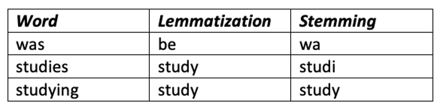
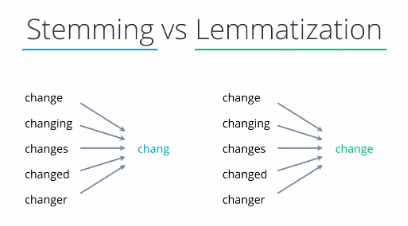
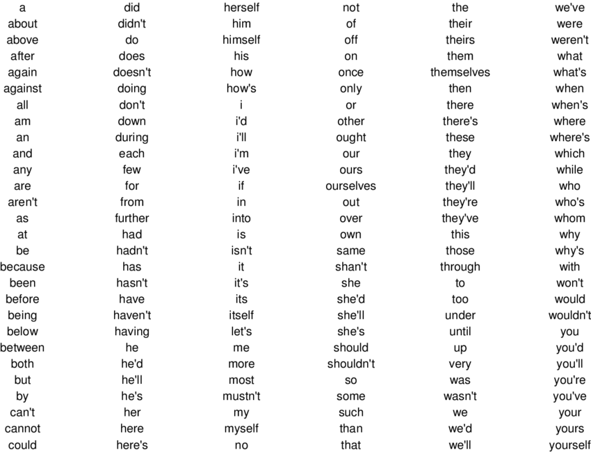
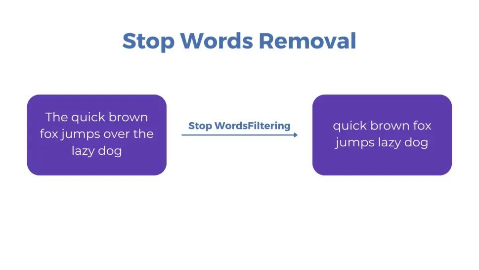
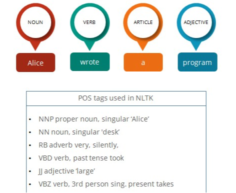
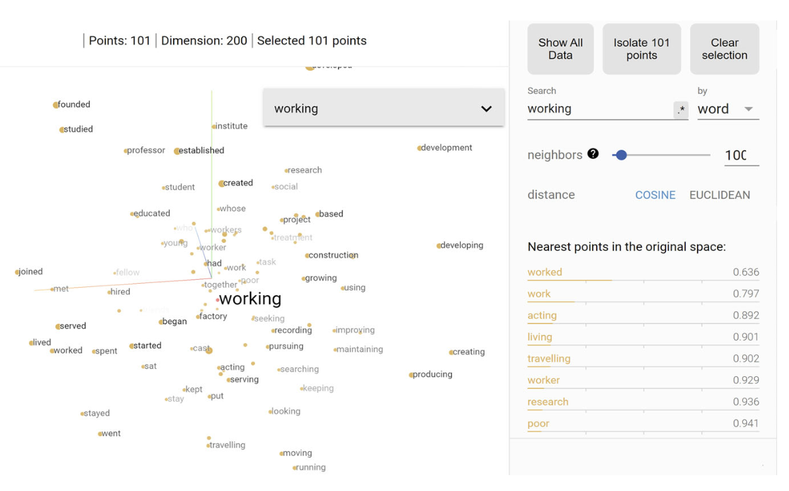
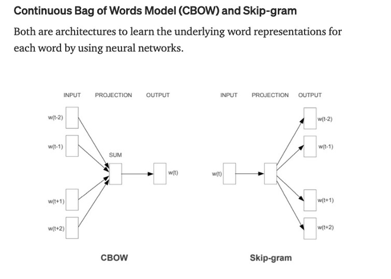

Text Pre-processing
LIS 4/5693: Information Retrieval and Text Mining
Dr. Manika Lamba
Text Pre-Processing
- Process of cleaning and transforming raw text into usable form
- Removes noise and prepares text for analysis
- Text normalization: transformation into a standard (canonic) form or any useful form, e.g., from non-standard language to standard
- upper/lower casing; notation of acronyms
- standard form of dates, time, and numbers
- stress marks, quotation marks, punctuation,
- spelling correction; emoticons, emoji, hashtags, web links
- tokenization
- lemmatization and stemming
- other forms of text preparation, e.g., extraction from PDFs, structured files like XML, web crawl, etc.
- Text preprocessing ensures quality and meaningful analysis
Text Pre-Processing
- Basic pipeline
document → paragraphs → sentences → wordswords and sentences → POS taggingsentences → syntactical and grammatical analysis
Important Terms
Corpus: Collection of documents
Token: Individual word unit
Term: Unique vocabulary word
Chunk: Text unit such as paragraph
Dictionary: List of words associated with categories
Bag of Words: Frequency-based representation
Levels of Text Representation
Lexical Level
Characters
Words
Phrases
Syntactic Level
- Grammar structure
- Examples
- Language models
- Vector-space models
Semantic Level
- Meaning
- Context and relationships
- Examples
- collaborative tagging (Web 2.0)
- ontologies
Common Text Pre-processing Tasks
Tokenization

Common Text Pre-processing Tasks
LemmatizationandStemming
 
Common Text Pre-processing Tasks
Stopwords

Common Text Pre-processing Tasks
Named Entity Recognization (NER)
Common Text Pre-processing Tasks
Part-of-Speech (POS) Tagging
POS tagging marks words in the corpus to a corresponding word based on its context and definition
Common Text Pre-processing Tasks
Bag of Words
Common Text Pre-processing Tasks
Term-Document Matrix
- It represents terms as a table or matrix of numbers for a given corpus
- In TDM, terms are represented as rows and documents as columns for a corpus where the number of occurrences of terms in the document is entered in the boxes
Common Text Pre-processing Tasks
Document-Term Matrix
- It represents terms as a table or matrix of numbers for a given corpus
- It is a transposition of TDM
- In DTM, each document is a row, and each word is the column
Common Text Pre-processing Tasks
Term Frequency-Inverse Document Frequency (TF-IDF)
- It evaluates the relevancy of a term for a document in a corpus and is the most popular weighting scheme in information retrieval (IR)
- The term weighting is popularly used in IR and supervised machine learning tasks like text classification
- It makes a list of more discriminative terms than others and assigns a weight to each highly occurring term
Common Text Pre-processing Tasks
Word Embeddings

